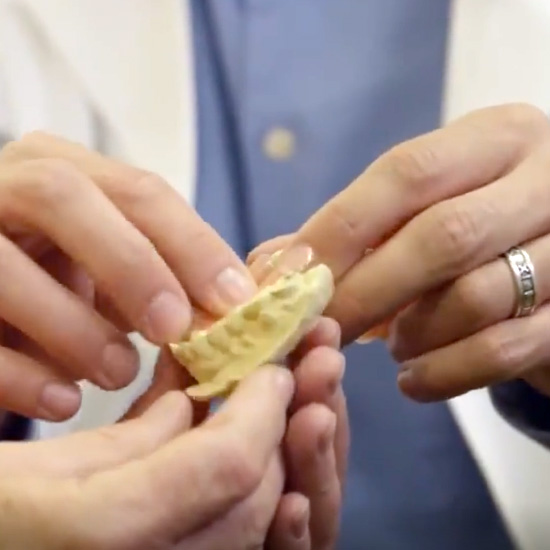
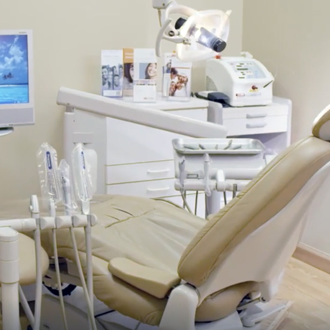
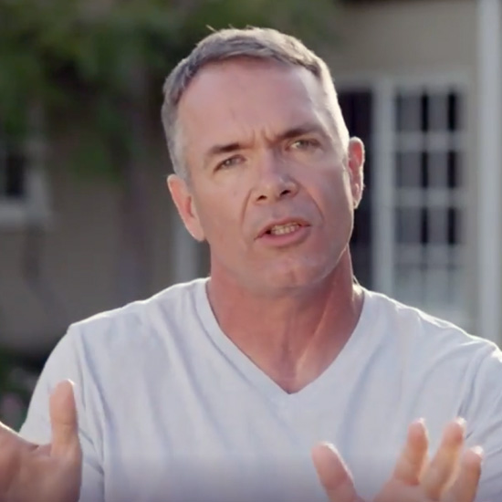
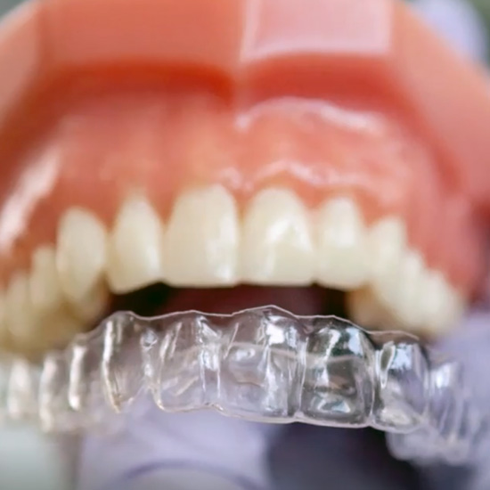
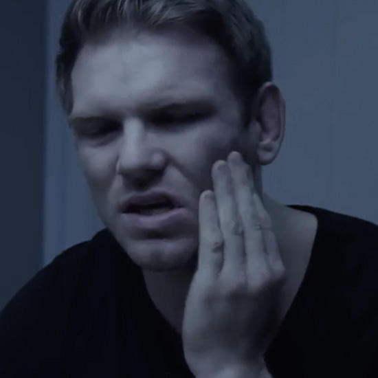
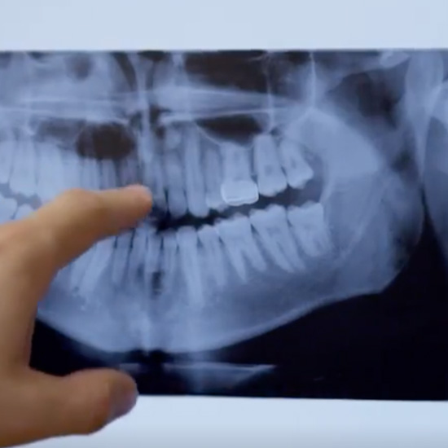
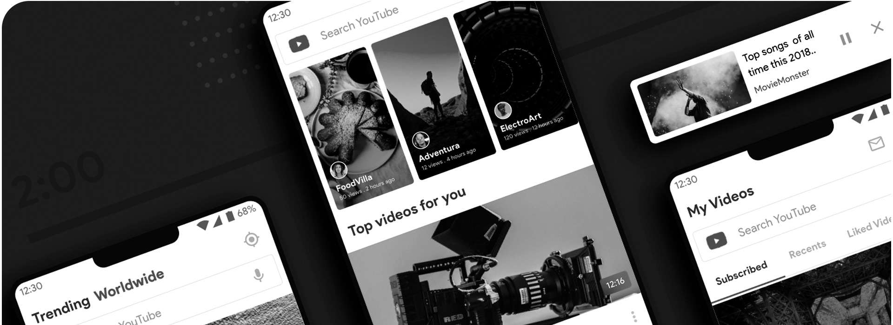

If you’re not already using Facebook’s [META] video services, why not? Boasting 2 billion monthly users, Facebook is an online force to be reckoned with. Today’s Facebook [META] isn’t like what it was 10 years ago, when people used it primarily for text posts and pictures about their day. It’s now a major marketing tool for many businesses. And recently, video has now equalled, and may soon surpass photos on Facebook promotions. The Dental Game Plan team is here to help you turn this transition into a way to grow your office and bring in more patients through your front doors.
Capture Patients Attention With Dazzling Dental Office Videos
Turn your dental marketing campaign into an audiovisual experience with Dental Game Plan’s dental videos!
Online video has exploded since its advent over two decades ago. Internet video traffic accounts for 80% of all consumer internet traffic, and mobile video consumption rises by 100% every year. All this data sends us an overwhelming message: video is the future of online marketing. For that matter, it’s the present too. If you haven’t already, you need to be incorporating dental office videos into your dental marketing strategy yesterday! Unlike simple words or still images, video has the ability to make your practice come alive to patients, showing off what makes you and your office unique and exciting.
The opportunities for dental videos are only continuing to grow, and they’re doing so rapidly. YouTube, Facebook, Vimeo, Twitch, Instagram, and TikTok are just some of the many video hosting sites that have taken the world by storm. Even many TV ads have started transitioning online with streaming. At Dental Game Plan, our expert video and marketing team can not only help you create stunning dental videos to show off your practice’s best side, but we’re ready to help you with the marketing side too. It’s time to get a leg up on the rest of the competition by turning your office’s dental marketing campaign into a multimedia experience. To get started, you can give our team a call at (323) 844-0339 today.

Dentures
01:52:00 understainding denture/partial/bridge

Restoration
01:49:00 learning about general tooth restoration and general dentistry

Sedation
01:30:00 Sedation dentistry, three different kinds

Invisalign
02:57:00 describing Invisalign, then benefits/costs/program

Emergency Dentistry
02:00:00 What to do in a dental emergency and what not to do

Dental Implants
02:11:00 Implants, implant retained dentures, implant bridges
What Makes For Great Marketing Videos For Dentists?
We know what makes heads turn when it comes to dental videos for dentists…
There’s more than one type of video you can use to market your practice: dentist and patient interviews, educational service content, dental office tours, special promotions, and more. The one key element between all of them is that they need to be entertaining and engaging without coming off as too market-y. Patients want to get a glimpse of what you and your office are all about, but they don’t want to feel like they’re being sold to. They want to feel like your dentists care about them and won’t simply see them as a dollar sign in the dental chair. This can be a tight rope to walk, especially when you’re advertising specific treatments or special offers. At Dental Game Plan, we make this easy by helping you create video content that displays you and your practice are accomplished, trustworthy, and reliable. With our help, prospective patients will see a dental office that they will love coming back to again and again. For dentist interviews, patient testimonials, or a dental office tour video, our videography team can take care of everything. From camera equipment and shooting footage to editing and sleek visuals, we can make you and your practice shine for new and current patients. Our expertise is in making sure viewers get to know the face behind the name and see just how much you care about them and their smiles.
This is a call to action_
YouTube is a recognized giant on the internet. As the second most popular website on the web after Google, YouTube receives over five billion views per day and boasts over 1.9 billion users worldwide. As you might guess, this is an untapped pool of potential patients that you don’t want to miss out on. However, many dentists think of YouTube as a place people log into to watch viral cat videos and vloggers rather than a useful marketing tool for their practice. While many viewers do watch these videos, you may be surprised to learn that 65% of YouTube users are there to search for a solution to a problem.
When it comes to dentistry, many patients want to learn about upcoming treatments they may need or even tips on taking better care of their smile. Our team can craft high-end educational videos to help your patients feel more comfortable and confident in your care. YouTube is also a great resource for hosting more standard office tour and dentist interview videos that we can embed into your practice’s website for a more polished and engaging patient experience.

Through YouTube, our team can also directly advertise your dental office through personalized commercials. The site’s algorithm lets us target specific users and demographics to ensure your ads reach the right potential patients. At Dental Game Plan, we take care of all of the logistics, keeping costs as low as possible while your patient numbers continue to climb. If you’re ready to get started, feel free to reach out to our team at (323) 844-0339 today.
high score: Dr. Amada
rosewood dental, Los Angeles
80,324
Facebook [META]: The Social Media Juggernaut
Next to YouTube, Facebook is a necessary platform for your practice
Like YouTube, Facebook [META] has its own algorithm allowing advertisers and businesses to find users and potential patients. However, Facebook [META] has the added power of its data-packed user profiles to make this targeted advertising even more successful and lucrative! Our team understands how to use these systems to your best advantage, and along with our stellar dental videos, we’ll help you pull attention away from your competitors and onto your incredible practice.

Taking Full Advantage Of Your Dental Videos
Video sharing doesn’t stop with YouTube and Facebook. The internet is bursting at the seams with sites for video!
While YouTube and Facebook are the big two of online videos, there are plenty of other corners of the internet that our team doesn't let go untouched. Twitter users watch 2 billion videos a day and Snapchat 10 billion videos each day. LinkedIn video campaigns have view rates of 50%. Millions of active monthly users also love platforms like Snapchat, Vimeo, Dailymotion, Twitch, and more. The amount of overall video content online is truly staggering. At Dental Game Plan, we can make sure you and your dental practice get on as many of these platforms as possible and use them to their full potential.
Our team also creates amazing TV commercials for our dentists. Thanks to smart TV and television streaming technologies, online TV ads are more accurate, efficient, and affordable than ever. We can target specific programs as well as online viewers who are more likely to click the links to your landing pages and website, leading to a quicker and more profitable conversion. With our help, you can start seeing your monthly patient leads skyrocketing! If you’re ready to revolutionize your office’s dental marketing, please don’t hesitate to give our team a call at (323) 844-0339.
How much does YouTube advertising cost?


Businesses pay about $10 a day, with an average of $0.10 to $0.30 per view or action. Your costs will be charged if someone clicks on your ad or watches it in its entirety. As you can see, this is an incredibly affordable way to market your dental office to market themselves to a large number of potential new patients! Higher costs mean you have a fantastic video and a more successful campaign!
How much should I pay a videographer?
In general, the costs for video production depend on the video length, locations, time needed to shoot video, and the specific team. At Dental Game Plan, we have our own in-house video team who can screenwrite, shoor, and edit high-quality videos for your dental office. While our costs will vary based on which marketing services you need, we follow a strict transparency policy so you always know how 100% of your campaign budget is used.
Do animated infographics work as well as video?
Animated infographics are an extremely effective marketing tool, and can be a great replacement for videos when budgets are limited. Even without sound, moving graphics are more attention-grabbing than standard static photos.
What do video makers use to edit their videos?
When dentists try to edit their own videos, many stick to iMovie since it’s designed for beginners and the shortcuts and tools are easy to learn and use. However, this program is very basic and is nowadays a sign of homemade videos, not professional promotional content or TV commercials. For sleeker dental office marketing videos, our video editors use more advanced software like Adobe Premiere and Final Cut Pro to make your practice pop and come alive!